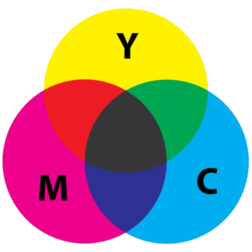

Wanneer je naar een wat ouder beeldscherm zit te kijken is je misschien wel opgevallen dat het beeldscherm bestaat uit een aantal kleine stippen die allemaal een kleur uitstralen. Samen vormen zij een beeld. Deze "stippen" heten pixels. Door pixels kunnen elektrische systemen hun output laten zien met het licht wat het systeem de pixels laat uitstralen
Maar hoe kan het nou dat een beeldscherm verschillende kleuren kan laten afbeelden? Dat zit zo: de pixels van het beeldscherm bestaan uit drie verschillende LEDs (Light Emitting Diode). Elk van de drie LEDs per pixel heeft een van de drie kleuren: Rood, Groen of Blauw. In het Engels: Red, Green, Blue. Vandaar de naam RGB. Doormiddel van deze drie kleuren te combineren kan je alle kleuren in het zichtbare lichtspectrum afbeelden (Zie de afbeelding hieronder voor duidelijkheid). Het RGB model is gebaseerd op een zwarte achtergrond. Als je het beeldscherm dus uit hebt is deze zwart, maar gebruik je alle kleuren dan is deze wit.
Bij printers heb je ook met een kleurmodel te maken, maar niet met het RGB model. De printer moet namelijk zwart op wit drukken en een RGB model doet juist het omgekeerde wanneer alle kleuren aan staan. Daarom hebben printers een speciaal kleurmodel: het CMY-model. Het model bestaat uit de kleuren Cyan, Magenta en Yellow. Drukken al deze kleuren onstaat er zwart, staan deze allemaal uit is het gewoon een witte pagina (zie afbeelding hieronder).
Er zijn verschillende factoren die beïnvloeden hoe scherp het beeldscherm is. Een van die factoren is resolutie. Resolutie is het aantal pixel dat in een scherm zit. Hoe meer pixels op dezelfde grote van een beeldscherm, hoe scherper het beeld. Naast pixels is ook de PPI (Pixels Per Inch) belangrijk. Een hoge PPI geeft aan dat er veel pixels op een inch zitten en dus een scherper beeld hebben dan een beelscherm met een lage PPI. De combinatie van PPI en resolutie zijn dus van belang om te kijken naar de scherpheid van het beeldscherm.
